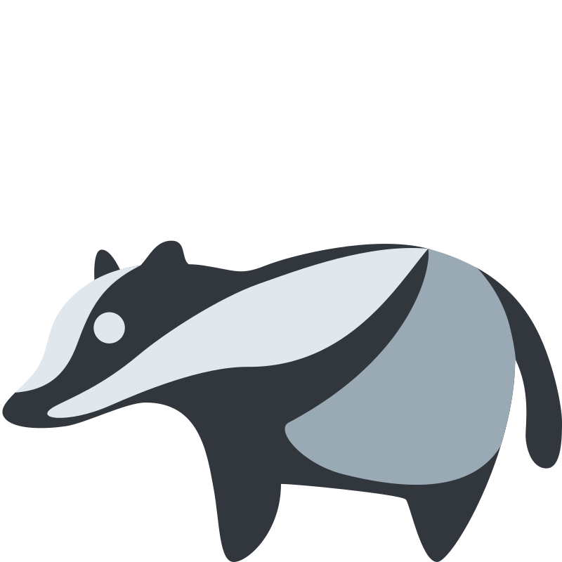

Aide Roro le blaireau à reconnaître les rythmes ternaires
Aide Roro le blaireau à reconnaître les rythmes ternaires

Aide ChaCha la gorete à reconnaître les intervalles Aide Jojo la rondelle à reconnaître les accords
Aide Jojo la rondelle à reconnaître les accords
 Aide Coco l'asticot à reconnaître les gammes
Aide Coco l'asticot à reconnaître les gammes